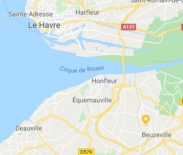
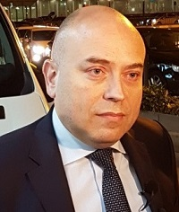

L'aéroport 1ntΛ°rPol
Présentation

Le nouvel aéroport 1ntΛ°rPol a été construit dans la ville de Beuzeville, non loin du Havre. La construction a débuté en 2015, après 4 ans de travaux, le site ouvre enfin ses portes aux clients !
Avec quize hangars, huit pistes de décollage et quatre terminaux, l'aéroport 1ntΛ°rPol est le troisième plus grand aéroport de France, sans compter son incroyable superficie totale de plus de 5 hectares !
Dès le 1er janvier 2020, plus de quize millions d'usagers sont attendus. Pour les accueillir, l'aéroport emploie plus de deux cents personnes disponibles 24h/24 7j/7 pour permettre aux clients de bénéficier de la meilleur expérience.
Directeur

Diplômé de l'ESIEE et de l'ENAC, Régis Lacote, 45 ans, occupait la fonction de Directeur des aires aéronautiques de l'aéroport Paris-Charles de Gaulle depuis 2012.
Il débute sa carrière en 1998 en tant que Responsable du PC Exploitation et Responsable Sûreté de l'aéroport de la Réunion "Roland Garros".
Il occupe ensuite différentes fonctions au sein du Groupe ADP : Responsable du service d'assistance en escale de Paris-Charles de Gaulle (2005-2008), Responsable du pôle exploitation des Terminaux 2 E/F/G et de la gare TGV (2008-2010), Directeur des opérations aéroportuaires de Paris-Orly (2010-2011), puis Responsable du domaine aviation exploitation de la Direction des aires aéronautiques de l'aéroport Paris-Charles de Gaulle (2011-2012).
Ayant vécu un certain temps en Normandie, il a décidé de construire il nouvel aéroport dans la ville de Beuzeville où il a grandi.